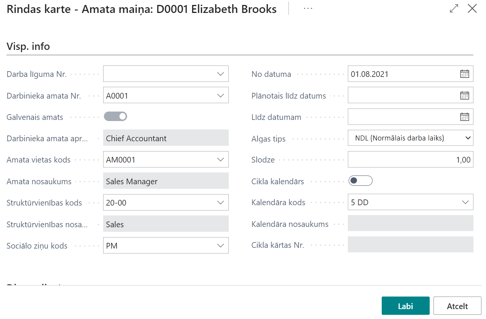
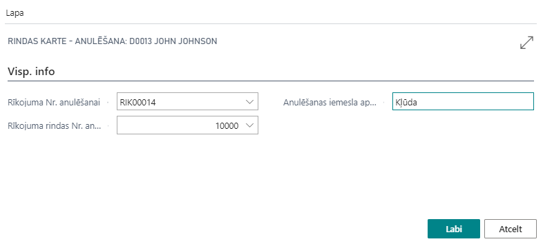
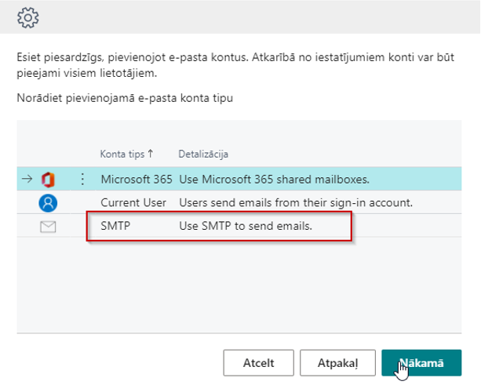
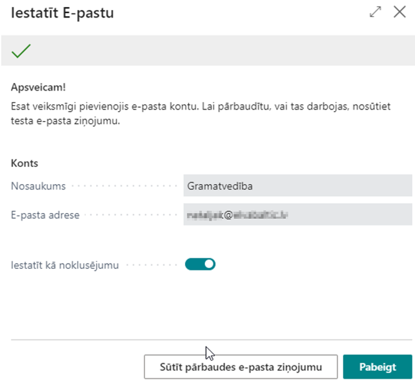
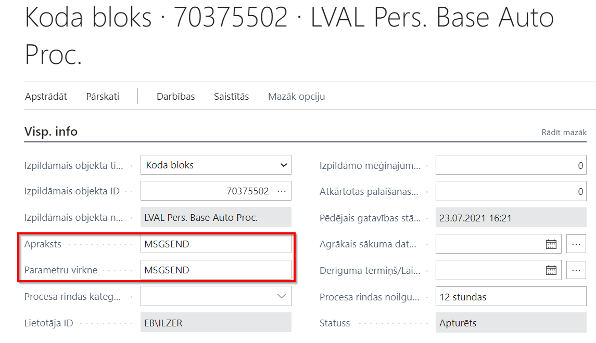

Personāla uzstādījumi
Lai uzsāktu darbu ar Personāla moduli ir:
- jāieslēdz Personāla uzstādījumi logā funkcija Personāla pārvaldība iespējota,
- jāieslēdz Atvaļ. periodu uzstādījumi logā funkcija Iespējot atvaļinājumu pārvaldību.
Personāla uzstādījumi logā ir pieejamas sekojošas funkcionalitātes:
Cilne: Visp. info
- Pārbaudes laika ilgums – var definēt vienu pārbaudes laika periodu visiem uzņēmuma darbiniekiem. Taču Darba līguma kartiņā vai Rīkojumā par pieņemšanu to var mainīt individuāli katram darbiniekam, ja ir nepieciešams;
- Pēc noklusējuma veidot nodokļu komponentes – sistēmā ir iespējams definēt, ka, ievadot visu nepieciešamo informāciju par darbinieka algas komponentēm, sistēma automātiski izveidos nodokļu komponentes pēc Personāla rīkojuma iegrāmatošanas;
- Amata kods obligāts – pie Personāla rīkojumiem grāmatošanas brīdī lauks amata kods ir obligāti aizpildāms. Tas ir būtiski uzņēmumam, kuram ir svarīgi uzturēt struktūrvienību hierarhiju;
- Pēc noklusējuma grāmatot rīkojumu ar DL – atzīme par to, kad izveidojot darba līgumu, automātiski iegrāmatosies arī Personāla rīkojums par darbinieka pieņemšanu darbā;
- Amatu izmaiņas bez rīkojuma - atzīme par to, ka amatu var nomainīt, neveidojot dokumentu;
- Atlaišanas pabalsta komponentes kods – tiek noradīta algas komponenta, kura tiks izmantota aprēķinos.
Cilne: Numerācija
Šajā cilnē definē dokumentu Numuru sērijas, kas satur sekojošus laukus:
- Kods – lietotāja definētais dokumenta kods (obligāti aizpildāmais lauks);
- Apraksts – koda apraksts;
- Sākuma Nr. un Beigu Nr. – definē sākuma un beigu numurus (sākuma numurs ir obligāti aizpildāms);
- Pēdējās izmantošanas datums un Pēdējais izmantotais numurs – aizpildās automātiski, kad sāk lietot Numuru sērijas;
- Numuri pēc noklusējuma – atzīme par to, vai šī numuru sērija tiks lietota, lai piešķirtu numurus automātiski;
- Ar roku piešķirtie numuri – atzīme par to, ka lietotājs var ievadīt dokumentu numurus arī ar roku;
- Datumu secība – atzīme par to, ka numerācija ir jāpiešķir hronoloģiski.
Cilne: Ziņojumi
Šajā cilnē tiek definēti sūtīšanas parametri, kā arī ziņojumu noklusēto veidņu definēšana. Veidņu veidošana ir aprakstīta nodaļā Dokumentu veidošana.
Cilne: Formāti
Šajā cilnē tiek definēti datumu, summas formāti.
Cilne: Prombūtnes reģistrācija
Iepr. apmaksātās dienas (DLI) – pirms atvaļinājuma perioda apmaksāto dienu kods.
Cilne: Dokumenti
- Amata rīkojuma bez dokumenta grāmatošana – atzīme par to, ka amata rīkojumu var iegrāmatot, nepievienojot veidni;
- Darba līguma bez dokumenta grāmatošana – atzīme par to, ka darba līgumu var iegrāmatot, nepievienojot veidni;
- Personāla rīkojuma bez dokumenta grāmatošana – atzīme par to, ka personāla rīkojumu var iegrāmatot, nepievienojot veidni;
- Atvērt dokumentu pēc izveides – atzīme par to, ka izveidojot dokumentu, uzreiz atvērt dokumentu ( Word failu).
Cilne: Noklus. veidnes
Šajā cilnē tiek definētas dažādu notikumu noklusētās veidnes. Veidņu veidošana ir aprakstīta nodaļā Dokumentu veidošana.
Cilne: Darba aizsardzība
Sastāv no sekojošiem laukiem:
- Neveidot pirmreizējās veselības pārbaudes - ja lietotājs nevēlas, lai veselības pārbaudes ģenerējas automātiski, iegrāmatojot personāla rīkojumu par pieņemšanu, tad Personāla uzstādījumos ir jāatzīmē Neveidot pirmreizējās veselības pārbaudes;
- Atļaut veselības pārbaužu grāmatošanu bez atzinuma – atzīmē, ja vēlas, lai sistēma ļautu iegrāmatot ierakstus veselības pārbaužu žurnālā bez atzinuma ievadīšanas;
- Atļaut labot atzinumu veselības pārbaudes ierakstos – ja žurnāls ir iegrāmatots bez atzinuma ievadīšanas, tad, ja lietotājs vēlas atzinumu ievadīt vēlāk ierakstos, ir jāatzīmē šī opcija;
- Neveidot pirmreizējās instruktāžas - ja lietotājs nevēlas, lai instruktāžas ģenerējas automātiski, iegrāmatojot personāla rīkojumu par pieņemšanu, tad Personāla uzstādījumos ir jāatzīmē Neveidot pirmreizējās veselības pārbaudes.
Darba līgums
Sistēmā ir iespējams ievadīt darba līgumus vai to izmaiņas, kā arī var piesaistīt veidnes un izdrukāt darba līgumu no sistēmas.
Darba līguma veidošana
Pieņemot darbā jaunu darbinieku, nepieciešams izveidot jaunu darba līguma karti. Lai izveidotu jaunu karti, nospiediet pogu Jauns.
Darba līguma kartes aizpildīšana:
Clne: Visp. info
- Nr. – darba līguma numurs no numuru sērijas;
- Grāmatošanas datums;
- Statuss – izveidots, apstiprināšanā, pabeigts (lai nodrošinātu darba līguma sagatavošanas un apstiprināšanas procedūru);
- Darbinieka Nr. – no darbinieku kataloga izvēlēties vai izveidot jaunu darbinieka karti*;
- Pieņemšanas datums;
- Plānotais atbrīvošanas datums – ja ir noteikts līguma termiņš. Tas ir informatīvais termiņš;
- Amata kods – no amatu saraksta, atbilstoši tiks aizpildīts amata nosaukums un struktūrvienības kods un nosaukums;
- Sociālo ziņu kods – nepieciešams norādīt, pieņemot jaunu darbinieku darbā;
- Algas tips – summētais vai normālais darba laiks
- Slodze;
- Kalendāra kods;
- Kalendāra nosaukums;
- Pārbaudes laiks – ja ir noteikts;
- Pārbaudes laika beigu datums – izrēķinās automātiski, ja ir definēts visam uzņēmumam;
- Grāmatot pieņemšanas rīkojumu ar DL - atzīme par to, kad izveidojot darba līgumu, automātiski iegrāmatosies ar Personāla rīkojums par darbinieka pieņemšanu darbā.
Darbinieka kartiņā aizpilda visus nepieciešamos laukus, kas ir nepieciešami darba līguma aizpildīšanai, izņemot algu aprēķinu, darbā pieņemšanas datumu un algu komponentes, amatu. Darbinieka kartes aizpildīšana ir aprakstīta nodaļā Darbinieka pamatinformācija.
Clne: Paraksti
Ja veidnē ir izmantoti mainīgie Parakstītāji, šajā cilnē var izvēlēties parakstītāju no darbinieku saraksta.
Clne: Veidne

Gadījumā, ja vajadzētu izmantot citu darba līguma veidni, to var nomainīt cilnē Veidne.
Darba līguma grozījumu veidošana
Sistēmā ir iespējams izveidot darba līguma grozījumu. Darba līguma grozījumu veidošanas procesā lietotāja ērtībai ieteicams ievērot sekojošu secību:
Clne: Visp. info
- Tiek ievadīts dokumenta numurs, piemēram “1”. Šis numurs tiks koriģēts vēlāk;
- Grāmatošanas datums - dokumenta sagatavošanas datums;
- Darbinieka Nr. – jāizvēlas darbinieks no kataloga;
- Pieņemšanas datums – grozījumu gadījumā tas ir datums no kura stāsies spēkā grozījumi;
- Atzīmējiet, ka tas ir grozījums, izvēloties galvenā līguma numuru un amatu uz kuru šie grozījumi attiecas. Tad, kad jau redzams galvenā līguma numurs, to var nokopēt Nr. laukā un pielikt klāt Grozījuma nr.
- Norādot spēkā esošo darbinieka amata numuru, sistēma piedāvās aizpildīt visu informāciju jaunajam amatam no šī amata, tai skaitā algas komponentes. Atbildot Jā, sistēma aizpildīs visu informāciju par amatu un komponenti un lietotājs to var tikai koriģēt. Atbildot Nē, manuāli jāaizpilda visa informācija bildē redzamajiem laukiem punktos (4) un (5), kā arī algas komponentes.
Clne: Veidne
Gadījumā, ja vajadzētu izmantot citu darba līguma veidni, to var nomainīt cilnē Veidne.
Darba līguma algas komponentes
Algas komponentes ir sasniedzamas Darba līguma kartiņā zem pogas Apstrāde - Algas komponentes.
Darba līguma algas komponentes satur sekojošus laukus:
- Darbinieka Nr. – aizpildīts no darba līguma kartes;
- Vārds – aizpildīts no Darbinieka Nr.;
- Uzvārds – aizpildīts no Darbinieka Nr.;
- Kods - kods no algas komponenšu kataloga;
- Apraksts - aizpildās automātiski, ievadot kodu, saglabājot ierakstu;
- Dokumenta lauka ID - lauks, kas ir izmantojams pie dokumenta veidošanas MS Word formātā. Dokumentu veidošanas process ir aprakstīts Dokumentu veidošanas nodaļā;
- Slodze;
- No datuma - no kura datuma algas komponentes ir spēkā;
- Līdz datumam - līdz kuram datumam algas komponentes ir spēkā;
- Vērtība - vērtība noteiktai algas komponentei pie noteiktas slodzes.
Visa pārējā informācija aizpildās pēc nepieciešamības.
Darba līguma izdruka un grāmatošana
Kad visa nepieciešamā informācija ir ievadīta un pārbaudīta, izveido darba līguma izdruku no piesaistītās veidnes, ko atdod parakstīšanai, paralēli sistēmā nomainot darba līguma statusu uz Apstiprināšanā. Veidņu izveidošana un piesaistīšana ir aprakstīta nodaļā Dokumentu pievienošana. Saņemot atpakaļ parakstītu dokumentu, darba līguma statusu nomaina uz Pabeigts un iegrāmato.
Darbinieka kartē pēc darba līguma iegrāmatošanas nekādas izmaiņas netiek veiktas, informācija iepildās tikai pēc Personāla rīkojuma par pieņemšanu darbā iegrāmatošanu. Par personāla rīkojumiem ir aprakstīts nodaļā Personāla rīkojumi. Līgums automātiski tiek pārvietots uz iegrāmatotajiem darba līgumiem.
Lai nodrošinātu to, ka pēc grāmatošanas dokumentu numuri ir secīgi, sākotnējais dokumenta numurs tiek izmantots kā pagaidu numurs – tikai kamēr dokuments nav iegrāmatots. Grāmatošanas brīdī tiek ņemts nākamais grāmatošanas numerācijas sērijas numurs un piešķirts iegrāmatotajam darba līgumam. Sagatavošanas dokumenta numurs pie iegrāmatotā dokumenta arī tiek saglabāts. Numuru uzstādījumi un definēšana ir aprakstīta nodaļā Personāla uzstādījumi.
No iegrāmatotā darba līguma var atvērt dokumentu MS Word formātā, nospiežot pogu Atvērt dokumentu. Dokumenta pievienošana ir aprakstīta sadaļā Dokumentu pievienošana.
Darba līguma vai grozījuma anulēšana
Ja darba līgums jau ir iegrāmatots, bet lietotājs saprot, ka kaut kas nav izdarīts pareizi, tad šo līgumu var anulēt pie nosacījuma, ka nav iegrāmatots personāla rīkojums uz šī līguma pamata. Ja personāla rīkojums jau ir iegrāmatots, tad sākumā jāanulē personāla rīkojums un tikai tad - darba līgums. Personāla rīkojumu anulēšana ir aprakstīta sadaļā Personāla rīkojumi. Darba līgumu var anulēt atverot sarakstu Iegrāmatotie darba līgumi, atrodot nepieciešamo līgumu un kartiņā nospiežot pogu Anulēt. Iegrāmatoto darba līgumu sarakstā parādās atzīme par to, ka līgums ir anulēts.
Personāla rīkojums
Personāla rīkojums tiek izmantots, lai iegrāmatotu jebkuras izmaiņas, kas ir saistītas ar personālu – pieņemšana darbā, atbrīvošana, darbinieka amatu maiņa, slodzes maiņa, algas maiņa utt. Iegrāmatojot personāla rīkojumu, sistēma automātiski izveido izmaiņas arī darbinieka kartiņā. Personāla rīkojumi tiek reģistrēti sarakstā Personāla rīkojumi.
Personāla rīkojuma uzbūve
Tā kā personāla rīkojums tāpat kā amata rīkojums pēc sava satura var būt orientēts gan uz vienu, gan uz vairākiem darbiniekiem, kā arī vairākām darbībām ar vienu darbinieku, tas sastāv no divām daļām – virsraksta un rindām. Par rīkojuma virsrakstu tiek glabāta sekojoša informācija:
Clne: Visp. info
- Nr. – rīkojuma unikāls identifikators (iespēja aizpildīt automātiski no numuru sērijām);
- Grāmatošanas datums – rīkojuma stāšanās spēkā datums;
- Statuss – izveidots, apstiprināšanā, pabeigts (paredzēts dokumenta apstiprināšanas procesam).
Cilne: Paraksti
Iespējams izvēlēties divus parakstītājus no uzņēmuma amatpersonu tabulas.
Cilne: Veidnes:
- Galvenes veidnes kods;
- Kājenes veidnes kods.
Cilne: Papildinfo
Informācija par to, kurš un kad ir izveidojis rīkojumu
Par rīkojuma rindām tiek glabāta sekojoša informācija:
- Rindas Nr. – rindas kārtas Nr. (aizpildās automātiski);
- Darbinieka Nr. – no darbinieku klasifikatora;
- Vārds – darbinieka vārds;
- Uzvārds – darbinieka uzvārds;
- Personas kods – darbinieka personas kods;
- Notikuma veids – pieņemšana, atbrīvošana, amata maiņa, slodzes maiņa, algas maiņa, prombūtne, disciplinārsods, uzteikums, piemaksa/atvilkums, papildus amats, amata atcelšana;
- Rindas veidnes kods – no dokumentu veidņu klasifikatora.
Personāla rīkojuma algas komponentes
Rīkojuma rindas algas komponentes sastāv no sekojošiem laukiem:
- Darbinieka Nr.;
- Vārds;
- Uzvārds;
- Tips - aizpildās automātiski, izvēloties kodu;
- Rīkojuma Nr.;
- Rīkojuma rindas Nr.;
- Rindas Nr.;
- Kods - kods no algas komponenšu klasifikatora;
- Apraksts - aizpildās automātiski, ievadot kodu;
- Dokumenta lauku ID – lauks, kas ir izmantojams pie dokumenta veidošanas MS Word formātā. Dokumentu veidošanas process ir aprakstīts Dokumentu veidošanas sadaļā;
- Slodze;
- No datuma – no kura datuma algas komponentes ir spēkā;
- Līdz datumam - līdz kuram datumam algas komponentes ir spēkā;
- Pamatalga – atzīme par to, vai konkrētā komponente ir pamatalga vai piemaksa;
- Summa par slodzi – summa par vienu slodzi, ielasās no amata kartiņas, ja ir aizpildīts;
- Vērtība - vērtība noteiktai algas komponentei pie noteiktās slodzes;
- Aprēķina veids - kā tiek rēķināta sekojoša algas komponente;
- Aprēķināt pēc - automātiski aizpildās, ievadot kodu;
- Bāze - piemaksām un atvilkumiem, kas tiek rēķināti uz bāzes pamata;
- Prioritāte - lielums, kurš norāda konkrētās komponentes vietu algas aprēķināšanas darbību ķēdē – jo mazāks šis lielums, jo augstāku prioritāti tas nozīmē, un jo ātrāk tas tiek iesaistīts aprēķinos;
- Apmaksāt nakts stundas - atzīme par to, ka nakts stundas tiek apmaksātas;
- Apmaksāt svētku stundas - atzīme par to, ka svētku stundas tiek apmaksātas;
- Apmaksāt virsstundas - atzīme par to, ka virsstundas tiek apmaksātas.
Ja personāla rīkojums tiek veidots, neizmantojot darba līgumu vai tā grozījumus, tad tāpat kā darba līguma algas komponentes, arī personāla rīkojuma algas komponentes tiek ielasītas no amata kartes algas komponentēm. Tāpēc lietotājam pirms rīkojuma grāmatošanas ir jāpārliecinās, ka visa informācija, kas ievadīta personāla rīkojuma algas komponentēs atbilst reālajai situācijai.
Personāla rīkojuma notikuma veidi
Kā jau tika augstāk minēts, personāla rīkojumam ir iespējams definēt sekojošus notikumus: pieņemšana, atbrīvošana, amata maiņa, slodzes maiņa, algas maiņa, prombūtne, disciplinārsods, uzteikums, piemaksa/atvilkums, papildus amats, amata atcelšana, anulēšana. Katram notikumu veidam atkarībā no tā rakstura sistēmā tiek ievadīta dažāda informācija. Ievade notiek caur Rindas karti, kas pieejama Rindu rīkjoslā.
Personāla rīkojumu piemēri
Rīkojums par atbrīvošanu
Atbrīvošanas no darba notikums satur sekojošu informāciju:
- Līguma izbeigšanas datums;
- Atbrīvošanas pamata kods – no atbrīvošanas pamatu klasifikatora;
- Atbrīvošanas pamata apraksts;
- Atbrīvošanas iemesla kods – no atbrīvošanas iemeslu klasifikatora;
- Atbr. iemesla apraksts;
- Sociālo ziņu kods;
- Saskaņots ar arodbiedrību – ja darbinieks nav arodbiedrībā, tad šis lauks nav aktīvs;
- Atlaišanas pabalsts;
- Atsauce uz līgumu Nr.
Pirms rīkojuma grāmatošanas par atbrīvošanu sistēma pārbauda:
- Vai darbinieks ir pieņemts pirms atbrīvošanas datuma;
- Vai darbinieks jau nav atbrīvots no darba;
- Vai darbinieks ir arodbiedrībā un vai ar arodbiedrību ir saskaņots.
Ja kāds no šiem nosacījumiem nav izpildīts, tad sistēma neļauj grāmatot rīkojumu par atbrīvošanu.
Rīkojums par amata maiņu
Amata maiņas notikums satur sekojošu informāciju:

- Darba līguma Nr. - ja par slodzes maiņu tika veidots darba līguma grozījumu, tad šajā laukā to izvēlas un visi pārējie lauki, ieskaitot algas komponentes laukus tiks aizpildīti no konkrēta grozījuma;
Ja darba līguma grozījumi netika veidoti, tad ir jāaizpilda pārējie lauki, izņemot Darba līguma Nr.
- Darbinieka amata Nr. – darbinieka amata numurs, kuru ir nepieciešams nomainīt;
- Galvenais amats – atzīme par to, ka tas ir galvenais amats;
- Darbinieka amata apraksts;
- Amata kods – jaunā amata kods;
- Amata nosaukums;
- Struktūrvienības kods – jaunā amata struktūrvienības kods;
- Struktūrvienības nosaukums;
- Sociālo ziņu kods;
- No datums – no kura datuma jaunais amats ir spēkā;
- Plānotais līdz datums – plānotais amata beigu datums;
- Līdz datumam – līdz kuram datumam jaunais amats ir spēkā. Pēc tam atkal iepriekšējais amats stājās spēkā;
- Algas tips – summētais vai normālais darba laiks;
- Slodze;
- Cikla kalendārs – atzīme par to, ka darbiniekam ir slīdošs grafiks;
- Kalendāra kods;
- Kalendāra nosaukums;
- Cikla kārtas nr.
Rīkojums par slodzes maiņu
Slodzes maiņas notikums satur sekojošu informāciju:
- Darba līguma Nr. – ja par slodzes maiņu tika veidots darba līguma grozījumu, tad šajā laukā to izvēlas un visi pārējie lauki, ieskaitot algas komponentes laukus tiks aizpildīti no konkrēta grozījuma;
Ja darba līguma grozījumi netika veidoti, tad ir jāaizpilda pārējie lauki, izņemot Darba līguma Nr.
- Darbinieka amata Nr. – darbinieka amata numurs, kuru ir nepieciešams nomainīt;
- Galvenais amats – atzīme par to, ka tas ir galvenais amats;
- Darbinieka amata apraksts;
- No datuma – no kura datuma jaunais amats ir spēkā;
- Plānotais līdz datums – plānotais amata beigu datums;
- Līdz datumam – līdz kuram datumam jaunais amats ir spēkā. Pēc tam atkal iepriekšējais amats stājās spēkā;
- Algas tips – summētais vai normālais darba laiks
- Slodze;
- Cikla kalendārs – atzīme par to, ka darbiniekam ir slīdošs grafiks;
- Kalendāra kods;
- Kalendāra nosaukums;
- Cikla kārtas nr.
Izmainot slodzes vērtību laukā Slodze, sistēma izmainīs slodzi pie algas komponentēm, kā arī izrēķinās jauno vērtību, kas pienākas par sekojošu slodzi.
Rīkojums par algas maiņu
Algas maiņas notikums satur sekojošu informāciju:
- Darba līguma Nr. – ja par algas maiņu tika veidots darba līguma grozījumu, tad šajā laukā to izvēlas un visi pārējie lauki, ieskaitot algas komponentes laukus tiks aizpildīti no konkrēta grozījuma;
Ja darba līguma grozījumi netika veidoti, tad ir jāaizpilda pārējie lauki, izņemot Darba līguma Nr.
- Darbinieka amata Nr. – darbinieka amata numurs, kuru ir nepieciešams nomainīt;
- Galvenais amats – atzīme par to, ka tas ir galvenais amats;
- Darbinieka amata apraksts;
- No datuma – no kura datuma jaunā alga būs spēkā;
- Līdz datumam – līdz kuram datumam jaunā alga būs spēkā. Pēc tam spēkā iestājās iepriekšējās darba algas nosacījumi.
Jauno darba algu ievada caur algas komponentēm. Tiks noslēgtas visas aktīvas (beigu datums nav norādīts vai ir vēlāks par rīkojuma “No datuma”) darbinieka algas komponentes ar datumu, kas ir vienu dienu pirms rīkojuma par algas maiņu sākuma datuma.
Rīkojums par prombūtni
Prombūtnes rīkojuma rindas karte satur sekojošu informāciju:
Cilne: Visp.info:
- Prombūtnes kods;
- Prombūtnes veida kods;
- Prombūtnes apraksts – tiks aizpildīts no prombūtnes koda;
- No datuma - pēc noklusējuma lauks aizpildās no Plānotās darbinieku prombūtnes klasifikatora, taču to var labot;
- Līdz datumam – pēc noklusējuma lauks aizpildās no Plānotās darbinieku prombūtnes klasifikatora, taču to var labot;
- Dienas pēc kalendāra;
- Darbinieks aizvietotājs;
- Veidot algas apmaksu - gadījumā, ja pirms prombūtnes jāaprēķina alga līdz prombūtnes sākumam, jāieliek ķeksis. Rezultātā prombūtnes reģistrā tiks izveidot ieraksts ar prombūtnes kodu ALGA_PER (standarta uzstādījumi) un starpizmaksas sarakstā var aprēķināt gan prombūtnes naudu, gan algu pirms prombūtnes;
- Nemaksāt starpizmaksu – ielikt ķeksi gadījumā, ja nevajadzētu šo prombūtni aprēķināt starpizmaksas sarakstā;
- Sadalīt pa periodiem – rīkojuma grāmatošanas rezultātā sistēma sadalīs prombūtni pa kalendāra mēnešiem, aizpildot lauku Turpinājums. Tādā veidā aprēķins par katru mēnesi tiks veikts atbilstošajā mēnesī.
Cilne: Komandējums:
- Komandējuma vieta - valsts;
- Komandējuma mērķis.
Rīkojums par disciplinārsodu
Disciplinārsoda rīkojuma rindas karte satur sekojošu informāciju:
- Disciplinārsoda kods – no disciplinārsodu klasifikatora;
- Disciplinārsoda apraksts;
- Datums – rīkojuma datums;
- Piezīmes – brīvā tekstā var uzrakstīt rīkojuma tekstu.
Rīkojums par uzteikumu
Uzteikuma rīkojuma karte satur sekojošu informāciju:
- Atbrīvošanas pamata kods – no atbrīvošanas pamatu klasifikatora;
- Atbrīvošanas pamata apraksts;
- Likuma panta Nr.;
- Piezīmes – brīvā tekstā var uzrakstīt rīkojuma tekstu;
- Atbrīvošanas datums.
Rīkojums par piemaksu / atvilkumu
Piemaksas vai atvilkuma rīkojuma karte satur sekojošu informāciju:
- Datums – piemaksas datums;
- Komponentes kods – piemaksas komponentes kods no klasifikatora;
- Komponentes apraksts;
- Summa – piemaksa – bruto summa;
- Piezīmes – teksts brīvā formā.
Rīkojums par papildus amatu
Tāpat kā rīkojumu par pieņemšanu darbā, arī rīkojumu par papildus amatu ir iespējams izveidot gan uz darba līguma grozījumu pamata, gan arī kā jaunu un neatkarīgu dokumentu. Ar šo notikumu tiek izveidots jauns darbinieka amats (papildus esošajiem). Par papildus amatu tiek norādīta sekojoša informācija:
- Darba līgums – no iegrāmatotiem darba līgumiem (ja šim notikumam tika izveidots atsevišķi grozījumi);
- No datuma – no kura datuma darbiniekam tiek piešķirts papildus amats;
- Plānotais līdz datums – plānotais beigu datums;
- Līdz datumam – līdz kuram datumam darbiniekam tiek piešķirts papildus amats. Termiņa beigās tiek atjaunots atkal iepriekšējais darbinieka amats;
- Amata kods – papildus amata kods;
- Struktūrvienības kods – papildus amata struktūrvienības kods – ielasās automātiski, izvēloties amata kodu;
- Struktūrvienības nosaukums;
- Slodze;
- Cikla kalendārs;
- Kalendāra kods;
- Kalendāra nosaukums;
- Cikla kārtas nr.
Ja pirms rīkojuma izveidošanas tika izveidots darba līguma grozījums, tad algas komponentes ielasīsies no darba līguma grozījuma algas komponentēm, kuras labot nebūs iespējams. Pirms rīkojuma par papildus amatu grāmatošanas sistēma pārbauda, vai darbiniekam uz No datuma ir aktīvs statuss.
Rīkojums par amata atcelšanu
Amata atcelšanas rīkojuma karte satur sekojošu informāciju:
- Darba līguma Nr. – no iegrāmatotiem darba līgumiem (ja šim notikumam tika izveidots atsevišķs grozījums);
- Darbinieka amata Nr. – norāda amatu, kurš ir jāatceļ;
- Līdz datumam – līdz kuram datumam amats ir aktīvs.
Pirms rīkojuma par amata atcelšanas grāmatošanas tiek pārbaudīts, vai darbinieks uz pieņemšanas datumu ir aktīvs darbinieks.
Iegrāmatoto rīkojumu anulēšana
Sistēmā ir iespējams anulēt gan visu rīkojumu, gan arī tikai konkrētu rindu. Rīkojumu vai rīkojuma rindu var anulēt no iegrāmatotā rīkojuma, bet, izmantojot rīkojumu ar notikuma veidu Anulēšana, var anulēt tikai konkrētu rindu.
- Rīkojuma anulēšana caur iegrāmatoto rīkojumu:
- Atver sarakstu Iegrāmatotie Personāla rīkojumi;
- Atrod rīkojumu, kas ir jāanulē;
- Var anulēt visu rīkojumu, klikšķinot uz Apstrāde (1) un Anulēt rīkojumu (2);
- Var anulēt tikai konkrētu rindu klikšķinot uz Rinda (3) un Anulēt (4).
Ja rīkojums tiek anulēts caur iegrāmatotiem rīkojumiem, tad sistēmā nevar pievienot aprakstu, kāpēc līgums ir anulēts, kā arī netiek izveidots dokuments. Taču tā ir vienīgā iespēja, kā var anulēt visu rīkojumu.
- Rīkojuma anulēšana, izmantojot notikuma veidu Anulēšana. Anulēšanas rīkojums sastāv no sekojošiem laukiem:

- Rīkojuma Nr. anulēšana – iegrāmatotā rīkojuma nr., kurš jāanulē;
- Rīkojuma rindas Nr. anulēšanai –norāda, kura rinda ir jāanulē;
- Anulēšanas iemesla apraksts.
Anulēt var jebkuru rīkojuma veidu pie nosacījuma, ka nav izveidots algas saraksts. Tomēr jāatceras, ka rīkojumi ir jāanulē secīgi - tas nozīmē, ka, ja, piemēram, darbinieks ir pieņemts darbā ar pieņemšanas rīkojumu, tad tam ir mainīta alga ar algas maiņas rīkojumu, tad, lai anulētu pieņemšanas rīkojumu, sākumā jāanulē rīkojms par algas maiņu. Anulētie rīkojumi no sistēmas nekur nepazūd un tos var apskatīt gan iegrāmatoto rīkojumu sarakstā, gan arī no darbinieka kartiņas sadaļā Personāla ieraksti.
Darba aizsardzība
Darba aizsardzības risinājums sastāv no:
- Veselības pārbaudes risinājuma;
- Instruktāžu risinājuma.
Veselības pārbaudes risinājuma ietvaros iespējams definēt darba vides riskus un piesaistīt tos katram darbiniekam caur amata kartiņu. Lietotāja ērtībai sistēma ģenerē pirmreizējās veselības pārbaudes ierakstus žurnālā, iegrāmatojot personāla rīkojumu par jauna darbinieka pieņemšanu darbā. Sūtot darbinieku uz veselības pārbaudi, no sistēmas iespējams izdrukāt nosūtījumu un, saņemot ārsta atzinumu, sistēmā ievadīt atzinumu par veselības stāvokli. Visu šo informāciju ir iespējams uzglabāt veselības pārbaužu ierakstos par visiem darbiniekiem kopā (vēsturē), kur arī uzrādās nākamās pārbaudes termiņš. Kā arī lietotāja ērtībām katram darbiniekam atsevišķi caur darbinieka kartiņu var redzēt veselības pārbaudes statusu. Līdzīgi kā veselības pārbaudes risinājums darbojas arī instruktāžu risinājums. Ir iespējams definēt instruktāžas veidus un tēmas, kā arī piesaistīt tos katram darbiniekam caur amata kartiņu. Iespējams automātiski ģenerēt žurnāla ierakstus, plānot instruktāžas un pārskatīt jau veikto instruktāžu vēsturi, kā arī no instruktāžu žurnāla iespējams drukāt instruktāžu parakstu lapu.
Uzstādījumi, kas attiecas uz darba aizsardzību, ir aprakstīti nodaļā Personāla uzstādījumi.
Obligātā veselības pārbaude
Riska faktoru definēšana
Katram amatam ir piesaistīti savi riska faktori – vienam amatam tie var būt gan viens, gan vairāki. Riska faktorus definē sarakstā Riska faktori.
Katrs riska faktors satur sekojošu informāciju:
- Kods – unikāls riska faktora identifikators;
- Apraksts – riska faktora nosaukums;
- Tips – piemēram, darba vides vai īpašais;
- Pārbaužu periodiskums – cik bieži par konkrēto risku jāveic veselības pārbaudes.
Veselības pārbaužu žurnāls
Informācija par plānotajām veselības pārbaudēm tiek glabāta reģistrā Veselības pārbaužu žurnāls:
- Dokumenta Nr. - unikāls ieraksta identifikators;
- Darbinieka Nr. – no darbinieku klasifikatora;
- Darbinieka vārds;
- Darbinieka uzvārds;
- Amata kods – aizpilda, ja vēl nav noslēgtas darba attiecības ar potenciālo darbinieku, bet ir jānosūta uz obligāto veselības pārbaudi atbilstoši riskiem konkrētam amatam;
- Pārbaudes veikšanas datums – datums, kad pārbaude ir veikta; sākumā plānotais, reģistrējot faktiskais;
- Pārbaudes veikšanas gala termiņš – termiņš, līdz kuram ir jāveic pārbaude; tiek aizpildīts automātiski, atkarīgs no amata riska faktora periodiskuma un pēdējās veiktas pārbaudes datuma;
- Riska faktori – no riska faktoru klasifikatora;
- Veselības pārbaudes veids – pirmreizējā, periodiskā vai ārkārtas;
- Ārpuskārtas pārbaudes iemesls;
- Nosūtījums izdrukāts – atzīme par to, ka nosūtījums izdrukāts.
Veselības pārbaužu žurnālu ir iespējams aizpildīt manuāli vai arī ģenerēt to no sistēmā pieejamās informācijas. Kā arī, pieņemot jaunu darbinieku, grāmatojot Personāla rīkojumu, pirmreizējā veselības pārbaude tiks uzģenerēta automātiski. Par Personāla rīkojumiem ir aprakstīts nodaļā Personāla rīkojumi.
Veselības pārbaužu žurnāla ierakstu manuālā aizpildīšana
Aizpildot žurnālu manuāli, pildot informāciju par riskiem, ir jāpilda caur pogu Apstrādāt (1) - Riska faktori (2).
Tabula Veselības pārbaužu žurnāla riska faktori satur sekojošu informāciju:
- Dokumenta Nr. – automātiski ģenerējas no numuru klasifikatora;
- Riska faktora kods – definēts no riska faktoru klasifikatora;
- Riska faktora apraksts;
- Riska faktora tips – piemēram, darba vide;
- Darbinieka amata Nr. – darbinieka amata numurs no amatu klasifikatora;
- Amata kods – amata kods no amatu klasifikatora;
- Amata apraksts;
- Amata no datums – datums, no kura amats ir izveidots;
- Riska faktora no datums – datums, no kura riska faktors ir izveidots;
- No datums – darbinieka amata vai amata riska faktora jaunākais datums (paredzēts izdrukai, lai būtu iespēja norādīt no kāda datuma darbinieks pakļauts šim riskam);
- Iepriekšējās pārbaudes ieraksta datums;
- Iepriekšējās žurnāla rindas datums;
- Iepriekšējās pārbaudes datums;
- Pārbaudes veikšanas gala termiņš – termiņš, līdz kuram ir jāveic pārbaude; tiek aizpildīts automātiski, atkarīgs no amata riska faktora periodiskuma un pēdējās veiktas pārbaudes datuma;
- Atzinuma kods – no atzinumu klasifikatora;
- Atzinuma apraksts.
Aizpildot lauku Riska faktora kods, pārējie lauki, izņemot laukus Atzinuma kods un Atzinuma apraksts, aizpildīsies automātiski pie nosacījuma, ka riska faktori tika piesaistīti amatam, veidojot amata kartiņu.
Veselības pārbaužu žurnāla ierakstu automātiska ģenerēšana
Lai aizpildītu žurnālu automātiski, klikšķiniet uz pogas Aizpildīt. Ģenerējot žurnāla ierakstus automātiski, tiek ņemti riska faktori no darbinieka amatiem piesaistītajām amata vietām. Ģenerējot nepieciešams norādīt datumu uz kuru vēlas veidot veselības pārbaudes.
Žurnāla ierakstus ir iespējams ģenerēt pēc Darbinieka numura, Amata koda, Profesiju koda, Struktūrvienības koda, Riska faktora koda un Riska faktora tipa. Cilnē Opcijas ievada datumu uz kuru vēlas ģenerēt žurnāla rindas. Lai noskaidrotu riska faktora nākamās pārbaudes termiņu, sistēma pārbauda veselības pārbaužu ierakstos esošās iepriekšējās pārbaudes datumu un darbinieka amatā stāšanās datumu. No šī iegūtā datuma, izmantojot riska faktora periodiskumu, tiek aprēķināts nākamās pārbaudes termiņš. Ja šis termiņš ir pirms sākotnējā norādītajā žurnāla aizpildīšanas datuma, tad konkrētā veselības pārbaude tiek pievienota žurnālam.
Veselības pārbaužu žurnāla ierakstu apvienošana
Ja vienam darbiniekam ir vairāki riska faktori, tad sākumā tiek izveidotas vairākas veselības pārbaudes par katru riska faktoru. Lai nepieciešamības gadījumā apvienotu žurnālā esošās veselības pārbaudes zem vienas, žurnālā ir apvienošanas funkcija Apvienot.
Šī funkcija no atfiltrētajiem ierakstiem pēc darbinieku numuriem apvieno veselības pārbaudes vienā. Ja lietotājs vēlas apvienot tikai viena darbinieka veselības pārbaudes, tad filtrā ieliek darbinieka numuru.
Kā pārbaudes veikšanas gala termiņš atlikušajai veselības pārbaudei tiek norādīts ātrākais termiņš no tajā apvienotajiem riska faktoriem.
Veselības pārbaudes nosūtījuma izdruka
Kad veselības pārbaude atrodas žurnālā, ir iespējams izveidot veselības pārbaudes nosūtījuma izdruku, nospiežot pogu Drukāt nosūtījumu. Pēc drukāšanas laukā Nosūtījums izdrukāts iepildās ķeksis.
Veselības pārbaudes atzinums
Pēc veselības pārbaudes veikšanas, saņemot atzinumu, to ievada tabulā Veselības pārbaužu žurnālā caur pogu Riska faktori. Izvēlās Atzinuma kodu no Veselības pārbaužu atzinumu klasifikatora.
Veselības pārbaužu atzinumi klasifikators sastāv no sekojošiem laukiem:
- Kods – unikāls atzinuma kods;
- Apraksts – atzinuma apraksts.
Veselības pārbaužu žurnāla grāmatošana un veselības pārbaužu ieraksti
Pēc atzinuma ievadīšanas Veselības pārbaužu žurnālu var iegrāmatot ar pogu Grāmatot. Lai nodrošinātu vēsturisku informāciju par veselības pārbaudēm, no veselības pārbaužu žurnāla pēc grāmatošanas tiek aizpildīti darbinieka veselības pārbaužu ieraksti reģistrā Veselības pārbaužu ieraksti. Tie satur sekojošu informāciju:
- Dokumenta Nr. – unikāls ieraksta identifikators;
- Darbinieka Nr. – no darbinieku klasifikatora;
- Darbinieka vārds;
- Darbinieka uzvārds;
- Darbinieka amats Nr. - darbinieka amata numurs no amatu klasifikatora;
- Amata vietas kods – darbinieka amata kods no amatu klasifikatora;
- Amata apraksts;
- Riska faktora kods – no riska faktoru klasifikatora;
- Riska faktora apraksts;
- Riska faktora tips - piemēram, darba vide;
- Pārbaudes veikšanas datums – datums, kad pārbaude ir veikta;
- Pārbaudes veikšanas gala termiņš – pārbaudes veikšanas termiņš;
- Veselības pārbaudes veids - pirmreizējā, periodiskā vai ārkārtas;
- Ārpuskārtas pārbaudes iemesls;
- Atzinuma kods – no atzinumu klasifikatora;
- Atzinuma apraksts;
- Piezīmes.
Darba drošība
Atbilstoši uzņēmuma iekšējo instruktāžu funkcionalitātei instruktāžas tiek klasificētas pa veidiem un tēmām Instruktāžu veida klasifikatorā. Atveriet sarakstu Instruktāžu veidi, kas sastāv no sekojošiem laukiem:
- Kods – unikāls veida identifikators;
- Apraksts – veida apraksts.
Instruktāžu tēmas var atdalīt atsevišķā reģistrā zem pogas Tēmas. Par instruktāžu tēmām tiek glabāta sekojoša informācija:
- Kods – tēmas identifikators;
- Nosaukums;
- Instruktora darbinieka Nr. – no darbinieku klasifikatora darbinieks, kas veic instruktāžu;
- Instruktora nosaukums – aizpildās ar instruktora darbinieka vārdu un uzvārdu, bet, nenorādot darbinieku, var aizpildīt manuāli;
- Kvalifikācijas rindas Nr. – atsauce uz instruktora darbinieka kvalifikācijas ierakstu, kurā ir norādīta nepieciešamā specialitāte;
- Instruktora specialitāte – aizpildās no darbinieka kvalifikācijas vai arī manuāli;
- Biežums – ja instruktāža ir periodiska, tad norāda biežumu.
Instruktāžu tēmu piesaiste noteiktam darbiniekam
Lai nodrošinātu instruktāžu tēmu piesaisti pie darbinieka, tiek aizpildītas amata kartes instruktāžu tēmas. Instruktāžas tēmas iestata Amatu sarakstā, noklikšķinot uz pogas Instruktāžas. Instruktāžām ir pieejami sekojoši lauki:
- Amata vietas kods – no amata vietu klasifikatora;
- Instruktāžu veida kods – no instruktāžu veidu klasifikatora;
- Instruktāžas tēmas kods – no instruktāžu tēmu klasifikatora;
- Datums no – datums no kura šī instruktāža nepieciešama amata vietas ieņemšanai;
- Datums līdz – datums no kura šī instruktāža nav nepieciešama amata vietas ieņemšanai;
- Instruktāžas veida apraksts;
- Instruktāžas tēmas apraksts.
Instruktāžu žurnāls
Plānotās instruktāžas tiek aizpildītas žurnālā ar nosaukumu Instruktāžu žurnāls, kas satur sekojošus laukus:
- Dokumenta Nr. – žurnāla rindas identifikators;
- Darbinieka Nr. – no darbinieku klasifikatora darbinieks, kas noklausās instruktāžu;
- Instruktāžu veida kods – no instruktāžu veida klasifikatora;
- Instruktāžu tēmas kods – no instruktāžu tēmu klasifikatora;
- Instruktora darbinieka nr. – no darbinieku klasifikatora darbinieks, kas veic instruktāžu;
- Instruktora nosaukums – aizpildās no instruktāžas tēmas vai ar instruktora darbinieka vārdu un uzvārdu, bet, nenorādot darbinieku, var aizpildīt manuāli (piemēram, ja tas ir pieaicināts speciālists no cita uzņēmuma);
- Kvalifikācijas rindas Nr. – atsauce uz instruktora darbinieka kvalifikācijas ierakstu, kurā ir norādīta nepieciešamā specialitāte;
- Instruktora specialitāte – aizpildās no darbinieka kvalifikācijas vai arī manuāli;
- Iepriekšējais instruktāžas veikšanas datums – datums, kad iepriekš veica šo instruktāžu;
- Datums – instruktāžas veikšanas datums (aizpilda pēc veikšanas);
- Termiņš – instruktāžās veikšanas termiņš.
Instruktāžu žurnāla ierakstus ir iespējams aizpildīt manuāli vai arī norādot konkrētu datumu uz kuru ģenerē žurnāla rindas no sistēmā pieejamās informācijas.
Instruktāžu žurnāla ierakstu automātiskā ģenerēšana
Žurnāla automātisko ģenerēšanu nodrošina poga Aizpildīt, kuru nospiežot atveras filtra logs. Filtrēt var gan pa amatu kodiem, gan pa struktūrvienību kodiem, profesiju kodiem, kā arī instruktāžu veida kodiem. Cilnē Opcijas ievada datumu uz kuru vēlas ģenerēt žurnāla rindas.
Ģenerēšanas procesā tiek paņemtas tās instruktāžu tēmas, kas ir norādītas pie darbinieka amata vietas. No instruktāžu ierakstiem tiek paņemts pēdējās instruktāžas datums vai arī darbinieka amata ieņemšanas datums un, izmantojot instruktāžas tēmas periodiskumu, tiek aprēķināts nākamās instruktāžas veikšanas termiņš. Ja termiņš ir pirms norādītā žurnāla aizpildīšanas datuma, tad instruktāžas tēma tiek iekļauta žurnālā.
Instruktāžu parakstu lapas izdruka
Pēc žurnāla veiksmīgas aizpildīšanas no tā ir iespējams izdrukāt instruktāžas parakstu lapu, noklikšķinot uz pogas Drukāt.
Kad instruktāžas ir veiktas, žurnālā aizpilda datumu un grāmato rindas. Pēc grāmatošanas rindas nonāk instruktāžu ierakstos.
Instruktāžu ieraksti un pārskati
Par jau veiktajām instruktāžām informācija tiek glabāta reģistrā Instruktāžu ierasti. Tas satur sekojošus laukus:
- Dokumenta Nr. – ieraksta identifikators;
- Darbinieka Nr. – no darbinieku klasifikatora darbinieks, kas noklausās instruktāžu;
- Instruktāžu veida kods – no instruktāžu veida klasifikatora;
- Instruktāžu tēmas kods – no instruktāžu tēmu klasifikatora;
- Instruktora darbinieka Nr. – no darbinieku klasifikatora darbinieks, kas veic instruktāžu;
- Instruktora nosaukums;
- Kvalifikācijas rindas Nr. – atsauce uz instruktora darbinieka kvalifikācijas ierakstu, kurā ir norādīta nepieciešamā specialitāte;
- Instruktora specialitāte – aizpildās no darbinieka kvalifikācijas vai arī manuāli;
- Datums – instruktāžas veikšanas datums.
No instruktāžu vēstures ir iespējams izdrukāt veikto instruktāžu pārskatu, nospiežot uz pogas Drukāt logā Instruktāžu ieraksti.
Šis pārskats satur sekojošu informāciju:
- veiktās instruktāžas temats;
- datums;
- instruktora Nr.;
- darbinieku skaits.
Veidojot pārskatu, norāda periodu. Instruktāžu vienīgais apvienojošais faktors ir datums un tēma. Līdz ar to notiek grupēšana pa instruktāžas tematiem un datumiem. Attiecīgi kopā ir redzamas vienā datumā notikušās vienas tēmas instruktāžas. Saraksts tiek kārtots pēc tēmas un tad pēc datuma.
Amata karte
Ja tiek iegrāmatots amata rīkojums par jaunas amata vietas izveidošanu, tad grāmatošanas brīdī tiek veidota jauna amata vieta. Ja tiek iegrāmatots amata rīkojums par esošas amata vietas izmaiņām, tad jau esošā amata kartiņā tiek veidotas iegrāmatotās izmaiņas.
Amata kartiņa satur sekojošus laukus:
- Kods – jauna amata vietas kods;
- Apraksts – amata nosaukums;
- Veida kods – analīzei var sadalīt amatus pa veidiem, piemēram speciālisti un vadītāji;
- Profesijas kods – kods no profesiju klasifikatora;
- Struktūrvienības kods;
- Struktūrvienības apraksts;
- Kopējās slodzes - slodzes, kas ir paredzētas šim amatam kopā;
- Patreizējās slodzes – cik slodzes uzņēmumā jau ir aizņemtas;
- Patreizējais darbinieku skaits – darbinieku skaits, kas ir nodarbināti konkrētā uzņēmumā;
- Vakantas slodzes – cik slodzes vēl ir vakantas šim amatam;
- Izveidošanas datums – amata izveidošanas datums;
- Slēgšanas datums – amata slēgšanas datums;
- Amata alga – informatīvs lauks;
- Atvaļinājuma dienas;
- Papildatvaļinājuma dienas.
No amata vietas kartes ir iespējams piekļūt visiem amata rīkojumiem par šo karti, tādējādi nodrošinot iespēju apskatīt amata vietas izmaiņas un iepriekšējos stāvokļus. Sadaļā Apstrāde – poga Rīkojuma rindas.
Nepieciešamās kvalifikācijas
Gadījumā, ja kādam amatam ir nepieciešama noteikta kvalifikācija, tad tam ir iespējams definēt Nepieciešamās kvalifikācijas amata kartiņas sadaļā Apstrāde. Atveras logs Amata vietas kvalifikācijas, kurš sastāv no sekojošiem laukiem:
- Amata vietas kods;
- Nr. – rindas numurs;
- Kvalifikācijas kods – no kvalifikāciju klasifikatora;
- Tipa kods – no kvalifikāciju tipa klasifikatora;
- Izglītība/Prasme – kvalifikācija ir izglītība vai prasme;
- Līmenis – no konkrētās kvalifikācijas līmeņa klasifikatora.
Kvalifikāciju klasifikatora veidošana ir aprakstīta nodaļā Darbinieka karte.
Pieņemot darbinieku amatā, kuram ir definēta kvalifikācija, sistēma paziņo, ka konkrētam darbiniekam pietrūkst kvalifikācija. Aprakstīts nodaļā Personāla rīkojumi.
Riska faktori
Ja kāds amats ir pakļauts noteiktiem riskiem, lai nodrošinātu riska faktoru piesaisti pie konkrēta darbinieka, norāda amata vietu riska faktorus, kas pieejami no amata kartiņas. Amata kartiņā klikšķiniet uz pogas Riska faktori, kas atrodama sadaļā Apstrāde. Atvērsies logs Amata vietas riska faktori, kurš sastāv no sekojošiem laukiem:
- Amata vietas kods;
- Riska faktora kods – riska faktora kods no risku klasifikatora;
- Riska faktora apraksts;
- Datums no – no kura datuma konkrētais riska faktors šai amata vietai stājas spēkā;
- Datums līdz - no kura datuma riska faktors vairs nav spēkā.
Riska faktoru klasifikatora veidošana ir aprakstīta nodaļā Darba aizsardzība.
Instruktāžas
Ja konkrētam amatam ir nepieciešams veikt instruktāžas, tad šim amatam iespējams tās definēt amata kartiņā, klikšķinot sadaļā Apstrāde uz pogas Instruktāžas. Atveras logs Amata vietas instruktāžas, kurš satur sekojošus laukus:
- Amata vietas kods;
- Instruktāžas veida kods – kods no instruktāžas veida klasifikatora. Instruktāžas veida klasifikators ir aprakstīts nodaļā Darba aizsardzība;
- Instruktāžas tēmas kods – kods no instruktāžas tēmu klasifikatora. Instruktāžas tēmu klasifikators aprakstīts nodaļā Darba aizsardzība;
- Datums no – datums, no kura amata vietas instruktāža ir spēkā;
- Datums līdz – datums, līdz kuram amata vietas instruktāža ir spēkā;
- Instruktāžas veida apraksts;
- Instruktāžas tēmas apraksts.
Nevēlamās amata prombūtnes periodi
Lai aizpildītu amata vietas svarīgos periodus, kuros nav vēlamas prombūtnes, no amata kartiņas jāatver un jānorāda nevēlamās prombūtnes periodi, kas atrodas sadaļā Apstrāde - Nevēlamās prombūtnes. Katram periodam ir iespējams norādīt sekojošu informāciju:
- Amata kods;
- No datuma – perioda sākuma datums;
- Līdz datumam – perioda beigu datums;
- Apraksts – svarīgā notikuma apraksts.
Šādi periodi jāievada par katru kārtējo gadu atsevišķi.
Amata algas komponentes definēšana
Lai katram amatam un tālāk arī katram darbiniekam caur personāla rīkojumu piesaistītu algu, amata kartē ir iespējams izveidot amata algas komponentes. Amata kartiņā, klikšķinot uz pogas Algas komponentes, ir iespējams definēt algas komponentes.
- Amata kods – no amata kodu klasifikatora;
- Rindas Nr. – aizpildās automātiski;
- Tips – aizpildās automātiski, izvēloties kodu;
- Kods – kods no algas komponenšu klasifikatora;
- Apraksts – aizpildās automātiski, ievadot kodu;
- No datuma – no kura datuma algas komponente ir spēkā;
- Līdz datumam – līdz kuram datumam komponente ir spēkā;
- Pamatalga – atzīme par to, vai dotā komponente ir pamatalga
- Aprēķina veids – kā tiek rēķināta sekojoša algas komponente;
- Vērtība – vērtība noteiktai algas komponentei;
- Aprēķināt pēc – automātiski aizpildās, ievadot kodu;
- Bāze – piemaksām un atvilkumiem, kas tiek rēķināti uz bāzes pamata;
- Prioritāte – lielums, kurš norāda konkrētās komponentes vietu algas aprēķināšanas darbību ķēdē – jo mazāks šis lielums, jo augstāku prioritāti tas nozīmē, un jo ātrāk tas tiek iesaistīts aprēķinos;
- Apmaksāt nakts stundas – atzīme par to, ka nakts stundas tiek apmaksātas;
- Apmaksāt svētku stundas – atzīme par to, ka svētku stundas tiek apmaksātas;
- Apmaksāt virsstundas – atzīme par to, ka virsstundas tiek apmaksātas.
Algas definēšana pie amata kartes nav obligāta – ja uzņēmumam nav definētas algas katram amatam, tad to var nepildīt.
Ziņojumu veidošana
Sistēmā ir iespējams automātiski sagatavot un informēt darbiniekus par uzņēmumā svarīgiem notikumiem, kā arī papildus iespējams pārskatīt nosūtīto ziņojumu vēsturi.
Visi izveidotie ziņojumi pieejami, atverot sarakstu Ziņojumi.
Ziņojumu adresātu grupas
Lai nevajadzētu katru reizi jaunam ziņojumam, kas attiecas tikai uz kādu konkrētu saņēmēju loku, pievienot adresātus pa vienam, ir iespējams izveidot adresātu grupas. Atveriet sarakstu Ziņojumu adresātu grupas. Izveidojiet jaunu rindiņu jaunai grupai un caur pogu Rindas piesaistiet adresātus.
Ziņojumu adresātu grupas rindas satur sekojošus laukus:
- Grupas kods – no adresātu grupas klasifikatora, veido pats lietotājs;
- Tips – adresātu grupa vai darbinieks;
- Kods – adresātu grupas kods vai darbinieka numurs (ja noradām e-pastu, var vienkārši ierakstīt kaut ko);
- E-pasts – aizpildīts tikai gadījumā, ja ziņojums sūtīts cilvēkam, kurš nav uzņēmuma darbinieks.

Adresātu grupas rindā ir iespējams definēt darbinieku vai citu adresātu grupu. Šādā veidā iespējams no mazākām grupām veidot lielākas ziņojumu grupas, kas apvieno dažādus darbiniekus. Adresāta e-pasts tiks paņemts no visiem adresātu grupu hierarhijā esošajiem darbiniekiem.
Ziņojumu notikumu uzstādījumi
Papildus jāaizpilda Ziņojuma notikumu uzstādījumi, kas satur sekojošus laukus:
- Kods – ziņojuma kods;
- Nosaukums;
- Automātiskā procesa tips – jānorāda gadījumā, ja tiek konfigurētas procesa rindas, t.i., automātiskā nosūtīšana par definētiem notikumiem (dzimšanas dienas, pases termiņš u.c.). Ja procesa rindas netiek konfigurētas, šis lauks nav jāaizpilda.
- Adresātu grupas kods – no adresātu grupas klasifikatora;
- Sūtīt pašam darbiniekam;
- Sūtīt struktūrvienības vadītājam;
- Pēdējā ziņojuma datums;
- Datuma formula – obligāti jābūt definētai, ja ziņojumam norādīts automātiskā procesa tips;
-
- datuma formula - obligāti jābūt definētai, ja ziņojumam norādīts automātiskā procesa tips;
-
- datuma formula - obligāti jābūt definētai, ja ziņojumam norādīts automātiskā procesa tips;
- Veidnes kods – ziņojuma veidne.
- Nepieciešama apstiprināšana;
- Apstiprināšanas adresātu grupas kods;
- Prombūtnes filtrs – tiek norādīts prombūtnes kods, ja jāziņo tikai par kādu konkrētu prombūtni (sākuma un beigu datumiem).
Ziņojuma veidne
Jāizveido jaunas veidnes kods sarakstā Ziņojumu veidnes. Jāsagatavo MS Word dokuments, kurā sagatavots ziņojuma teksts. Mainīgā teksta vietā nepieciešams ierakstīt mainīgā dokumenta lauka kodu ar procentiem. Piemēram:

Jāpievērš uzmanība, ka locījumi nav pieejami. Dokumentu laiku nosaukumi ir pieejami pie konkrētā ziņojuma veida sarakstā Ziņojumu notikumu uzstādījumi, noklikšķinot uz pogas Dokumentu lauki.
Sagatavotu failu saglabājiet ar paplašinājumu Web Page, Filtered (.htm,.html)
Uzstādījumi ziņojumu nosūtīšanai e-pastā
Lai ziņojumus varētu izsūtīt ar e-pasta starpniecību, ir nepieciešams veikt zemāk minētos uzstādījumus E-pastu kontos un Personāla uzstādījumos:
E-pasta Konts
Nepieciešams izveidot e-pasta kontu. Sistēmas meklētājā ierakstiet E-pastu Konti un izvēlieties to no saraksta. Lai izveidotu jaunu kontu, jānospiež pogas Jauns - Pievienot e-pasta kontu. Lai sūtītu e-pastus, no algas moduļa jāizvēlas Konta tips SMTP - Use SMTP to send emails.

Aizpildiet SMTP uzstādījumus:

Nākamajā solī var pārbaudīt e-pastu , kā arī iestatīt šo kontu kā noklusēto:

Personāla uzstādījumi
Ziņojumiem ir nepieciešams salikt sekojošos uzstādījumus katalogā Personāla uzstādījumi:

Lietotāju uzstādījumi
Lapā Lietotāju uzstādījumi priekš Personāla risinājuma vajadzībām nepieciešams aizpildīt tikai lauku Lietotāja ID jeb sistēmas lietotāja ID.
Pārējie lauki šim risinājumam nav aktuāli.
Procesa rinda
Procesu rindas veido sarakstā Procesu rindu ieraksti. Katram atsevišķam notikum jāizveido sava procesu rindas ieraksta karte, norādot Izpildāmā objekta ID - 70375502:

Procesa rindas ieraksti kartes cilnē Visp. info var redzēt notikuma veidu, kuram var definēt periodiskumu. Jāpievērš uzmanība, ka laukiem Apraksts un Parametru virkne jābūt vienādiem. Lai definētu pašu notikumu, lietotājam ir jābūt MS Business Central programmēšanas zināšanām.
Cilnē Periodiskums definē ziņojumu sūtīšanas intervālu. Šo lietotājs var definēt pats. Definējot periodiskumu ir jāpievērš uzmanība, lai minūšu skaits no vienas izpildes līdz otrai nav mazāks par vienu reizi, kas nepieciešams ziņojuma apstrādei.
Lai varētu izsūtīt izveidotos ziņojumus, sistēmai ir nepieciešams, lai Procesu rindas ierakstos būtu izveidota atsevišķa procesu rinda ar kodu MSGSEND, ko ieraksta laukos Apraksts un Parametru virkne

Izsūtīto ziņojumu vēsturi par konkrētiem notikumiem var apskatīties Procesa rindas žurnāla ierakstos. Žurnāls satur sekojošus laukus:
- Statuss – kurā notikums atrodas uz pārbaudes brīdi - veiksmīgi, notiek, kļūda;
- Lietotāja ID – kurš ir palaidis šo notikuma procesu;
- Izpildāmais objekta nosaukums;
- Sākuma datums/Laiks;
- Beigu datums/Laiks;
- Kļūdas ziņojums – ja statuss ir kļūda.